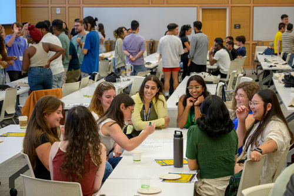

Networking and Professional Connections
Networking is about building relationships and getting to know people in positions and career areas of interest. It has always been an important job/internship strategy. Networking conversations can happen in-person, over the phone, or online through platforms like Zoom.
Networking is Building Relationships
- Leverage your circle of friends, family, professors, previous employers, and the University of Michigan Alumni.
- Be curious about the person you are connecting with to learn more about their career. Networking isn’t about winning people over or asking for a job.
- We recommend asking for informational interviews, which are short meetings or calls with someone in a field of interest to learn more about their job, their industry, their career pathway, and to hear their advice.
Start Here

Where does it happen?
- In one-on-one conversations with alumni on UCAN (University Career Alumni Network) - This UCC resource is an EASY way to connect with alumni who have volunteered to offer career expertise.
- LinkedIn is another great tool - one you can use to showcase yourself and your career interests. Find out more on building strong profiles.
- Information sessions, panels and networking events with professionals - There are information sessions, networking hours, and ‘coffee chats’ all planned with you in mind. Set reminders to check out the “Events Page” on Handshake each week for the latest additions.
- At Immersions - Travel to employer sites to learn more about their organization and network with their team.
Connect with the UMSI Career Development Office
The UMSI Career Development Office (CDO) offers personalized support through appointments, events, and resource guides. Visit the CDO website or find us on campus to learn more, schedule a coaching session, or just say hello.